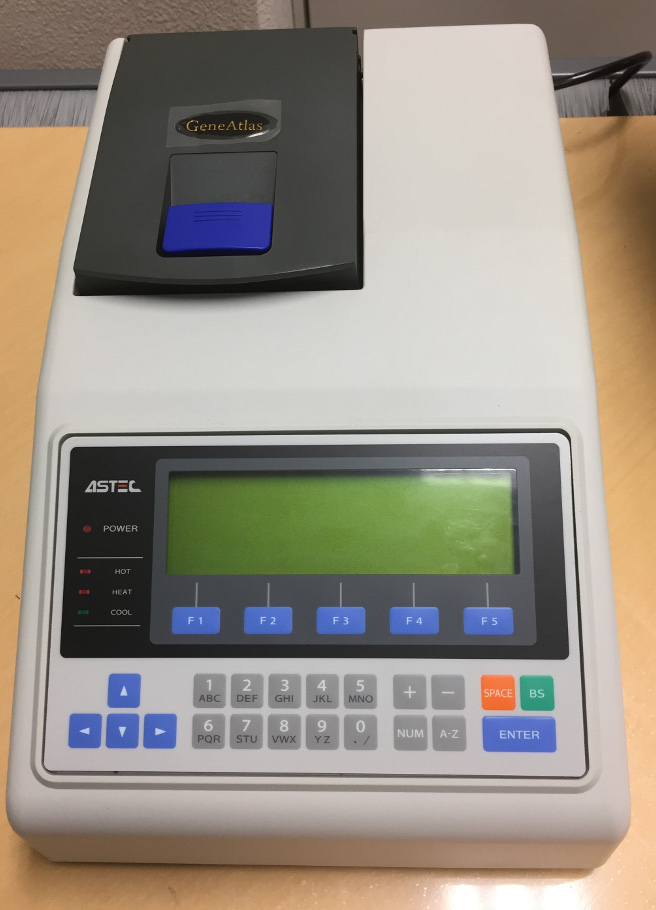

Simulation conditions
We set the binding rate constant (kf) based on toehold length as follows [1,2].
-
If toehold_length ≤ 6
kf = 5.0×10n-1 [M -1s-1]
else
kf = 3.0×106 [M-1s-1]
Where
n : toehold_length
Type & Strands
Walker
DNAWalker (Figure 1) was composed of annealed DNA strands W1 and W2 . Figure 2 shows the annealing conditions for DNAWalker. Table 1 shows the sequences of the DNAWalker.

| Name | Base sequences (5'→3') | Length |
|---|---|---|
| W1 | GGCAAAACTTAACAATACTAACTAATCCAATTCGCACGATTGC ATAGCGAACGGACTCCAGGACA TCCTAC CGCTCAATCACCACCT | 87 |
| W2 | CCCATAACATTACTTAACTAACATAACCTAGTCCGTTCGCTATGCAATCGTGCGAATCCAGCAGATCAACCG CTCAATCACCACCT | 86 |
Ground A
Hairpins S1 and S2 (Figure 3) were mixed with single strands C1, G1, and G4 and subsequently annealed to produce Ground A, as shown in Figure 4. DNA sequences for Ground A are shown in Table 2.

| Name | Base sequences (5'→3') | Length |
|---|---|---|
| S1 | GGTAGTTCTAGGGTGTCGAGGTGGTGATTGAGCGGTAGGATGTCACCACCTCTTCACCCATCCTACCGCTCAATC TCCTAC CGCTCAATCACCACCT | 75 |
| S2 | CACCTCGGATCTTGATGGAGGTGGTGATTGAGCGGTTGATCTCTCCACCTCAACTCCCATCAACCGCTCAATC | 73 |
| G1 | CCATAGGGAGGGCTCAAGATCCGAGGTGCGTGCATAGATAGTCATAGCCTTGGACCACCCTAGAACTACC | 70 |
| G4 | GTCCAAGGCTATGACTATCTATGCACG | 27 |
| C1 | GCCCTCCCTATGGCATGGTACTCAGCT | 27 |
Ground B
Hairpins S1 and S2 (Figure 5) were mixed with single strands C2, G2, and G4 and then annealed to produce Ground B under the conditions shown in Figure 6. DNA sequences for Ground B are shown in Table 3.

| Name | Base sequences (5'→3') | length |
|---|---|---|
| G2 | CGGATGAGTGGACCAAGATCCGAGGTGCGTGCATAGATAGTCATAGCCTTGGACCACCCT AGAACTACCAGCTGAGTACCATG | 83 |
| C2 | GTCCACTCATCCGCAGTATCCGTGGCC | 27 |
Ground C
Hairpin S1 and single strands S3 and S4 (Figure 7) were mixed with single strands G3 and S4, and then annealed to produce Ground C. Figure 8 shows an annealing conditions for Ground C. DNA sequences for Ground C are shown in Table 4.
| Name | Base sequences (5'→3') | Length |
|---|---|---|
| G2 | CACCTCGGATCTTGCTGGAGGTGGTGATTGAGCGGTTGATCTCTCC | 46 |
| C2 | GGAGAGATCAACCGCTCAATC | 21 |
| G3 | GCAAGATCCGAGGTGCGTGCATAGATAGTCATAGCCTTGGACCAC CCTAGAACTACCGGCCACGGATACTG | 71 |
Ground
Grounds A, B, and C were incubated at room temperature for 5 h to produce Ground.

DNAWalker and Ground A
Ground A and the pre-assembled DNAWalker were incubated at room temperature for 2 h to produce DNAWalker and Ground A.

Fuel
We used two types of Fuel, F1 and F2. F1 was reacted with S1, and F2 was reacted with S2.
| Name | Base sequences (5'→3') | Length |
|---|---|---|
| F1 | GTAGGAAGGGTGAAGAGGTGGTGACATCCTACCGCTCAATCACCACCTGCTCGCA | 55 |
| F2 | GTTGAAGGGAGTTGAGGTGGAGAGATCAACCGCTCAATCACCACCTCAACTCGCA | 55 |
Experiment A Sample preparation
Step1 Dilution
We diluted each strand in Tris-ethylenediaminetetraacetic acid (EDTA) buffer supplemented with 12.5 mM MgCl2 as shown in below. The experiment was performed at 20°C. We conducted four types of experiments:
A double-stranded DNA (S1-W1) and a single-stranded DNA (F1)
| DNA | Concentration[nM] |
|---|---|
| S1-W1 | 20 |
| F1 | 80 |
A double-stranded DNA (S1-W1) and a single-stranded DNA (F2)
| DNA | Concentration[nM] |
|---|---|
| S1-W1 | 20 |
| F2 | 40 |
A double-stranded DNA (S2-W2) and a single-stranded DNA (F2)
| DNA | Concentration[nM] |
|---|---|
| S1-W2 | 20 |
| F2 | 40 |
A double-stranded DNA (S2-W2) and a single-stranded DNA (F1)
| Name | Concentration[nM] |
|---|---|
| S2-W2 | 20 |
| F1 | 80 |
Step2 Annealing
We annealed DNA samples under the conditions as described in the Types and strands section. We determined the annealing conditions through the simulation in NUPACK [3]. We heated the mixture at 95°C for 5 min and slowly cooled it with a thermal cycler.
The annealing conditions of Pattern A and B are shown in Figure 12, and the conditions of annealing of Patterns C and D are shown in Figure 13.
Signal intensity measurements
We measured the signal intensity using a spectrofluoremeter (FP-8300; JASCO) for 3 h with 5-min intervals.
Output confirmation
We applied fluorescence resonance energy transfer (FRET) to confirm whether the output was released. The base sequences of Reporter1 are shown in Table 10. Before the output reacted with Reporter1, FAM did not show fluorescence since Reporter1 of FAM was absorbed by BHQ1. When the output reacted with Reporter1, Reporter1 of FAM became detectable because the distance between the FAM and BHQ1 molecules increased (Figure 15).
| Name | Base sequences (5'→3') |
|---|---|
| RP1 | [FAM-] CACACGCTCAATCAC |
| RP2 | AGGTGGTGATTGAGCGTGTG [-BHQ1] |

Electrophoresis
- The gel was set on an electrophoresis chamber.
- Samples (10 μL) and loading dye (2 μL) were mixed.
- Samples (10 μL) were added to wells, and 80 V was applied for approximately 200 min.
- Gels were taken out of wells and stained using a DNA staining solution for 30 min.
- Fluorescence was observed using a gel imager.

{kind=link}
{kind=link}
{kind=link}
{kind=link}
{kind=link}
{kind=link}
{kind=link}
Experiment B Sample preparation
Step1 Dilution
We diluted each strand to 10 μM in Tris-EDTA buffer supplemented with 12.5 mM MgCl2. The experiment was performed at 20°C.
Step2 Annealing
We annealed DNA samples under the conditions as described in the Types and strands section. We determined the annealing conditions through the simulation in NUPACK [3]. We heated the mixture at 95°C for 5 min and slowly cooled it with a thermal cycler. The annealing conditions of S1 and W1 are shown in Figure 18, and the annealing conditions of S2 and W2 are shown in Figure 19.
Electrophoresis
- The gel was set on an electrophoresis chamber.
- Samples (10 μL) and loading dye (2 μL) were mixed.
- Samples (10 μL) were added to wells, and 80 V was applied for approximately 200 min.
- Gels were taken out of wells and stained using a DNA staining solution for 30 min.
- Fluorescence was observed using a gel imager.
Experiment C Sample preparation
Step1 Dilution
We diluted each strand to 10 μM in Tris-EDTA buffer supplemented with 12.5 mM MgCl2. The experiment was performed at 20°C.
Step2 Annealing
We annealed DNA samples under the conditions as described in the Types and strands section. We determined the annealing conditions through the simulation in NUPACK [3]. We heated the mixture at 95°C for 5 min and slowly cooled it with a thermal cycler. The annealing condition of DNA walker is shown Figure 20.
.png){kind=link}
Electrophoresis
- The gel was set on an electrophoresis chamber.
- Samples (10 μL) and loading dye (2 μL) were mixed.
- Samples (10 μL) were added to wells, and 80 V was applied for approximately 200 min.
- Gels were taken out of wells and stained using a DNA staining solution for 30 min.
- Fluorescence was observed using a gel imager.
Purification
- Excise the target DNA fragment from the gel and place it in a tube
- Insert the excised gel into the well of the new gel
- Perform electrophoresis experiments using the above procedure
Experiment D Sample preparation
Step1 Dilution
We diluted each strand to 10 μM in Tris-EDTA buffer supplemented with 12.5 mM MgCl2. The experiment was performed at 20°C.
Step2 Annealing
We annealed DNA samples under the conditions as described in the Types and strands section. We determined the annealing conditions through the simulation in NUPACK [3]. We heated the mixture at 95°C for 5 min and slowly cooled it with a thermal cycler. The annealing condition of Ground is shown Figure 21.
Electrophoresis
- The gel was set on an electrophoresis chamber.
- Samples (10 μL) and loading dye (2 μL) were mixed.
- Samples (10 μL) were added to wells, and 80 V was applied for approximately 200 min.
- Gels were taken out of wells and stained using a DNA staining solution for 30 min.
- Fluorescence was observed using a gel imager.
Purification
- Excise the target DNA fragment from the gel and place it in a tube
- Insert the excised gel into the well of the new gel
- Perform electrophoresis experiments using the above procedure
Incubation
We incubated Grounds A, B, and C at room temperature for 5 h with a thermal cycler to produce Ground A+B, Ground B+C, and Ground (Ground A+B+C).
Experiment E Sample preparation
Step1 Dilution
We diluted each strand to 10 μM in Tris-EDTA buffer supplemented with 12.5 mM MgCl2. The experiment was performed at 20°C.
| Name | Base sequences (5'→3') | Length |
|---|---|---|
| RP3 | AGATCAACCGCTCAATC [-BHQ1] | 17 |
| RP4 | [FAM-] GATTGAGCGGTTGATCTCTCC | 21 |
Signal intensity measurements
We measured the signal intensity using a spectrofluoremeter (FP-8300; JASCO) for 3 h with 5-min intervals.
Output confirmation
We applied fluorescence resonance energy transfer (FRET) to confirm whether the output was released. The base sequences of Reporter2 are shown in Table 12. Before the output reacted with Reporter2, FAM did not show fluorescence since Reporter2 of FAM was absorbed by BHQ1. When the output reacted with Reporter2, Reporter2 of FAM became detectable because the distance between the FAM and BHQ1 molecules increased (Figure 22).
| Name | Concentration[nM] |
|---|---|
| Walker | 100 |
| Ground | 100 |
| F1 | 150 |
| F2 | 100 |
| Reporter2 | 100 |

Electrophoresis
- The gel was set on an electrophoresis chamber.
- Samples (10 μL) and loading dye (2 μL) were mixed.
- Each sample (10 μL) was added to wells and 80 V was applied for approximately 200 minutes.
- Gels were taken out of wells and stained using a DNA staining solution for 30 minutes.
- Fluorescence was observed using a gel imager.
Materials and equipment
Materials and equipment were purchased from the companies indicated below.
| Material | Name | Company |
|---|---|---|
| Poly-Acrylamide Gel | e-PAGEL | ATTO, JAPAN |
| TBE Buffer | WSE-7051EzRunTBE | ATTO, JAPAN |
| Loading dye | Gel Loading Dye Purple (6×) B7024S | BioLabs, JAPAN |
| DNA stain | GelGreen Nucleic Acid Stain 10,000× DMSO (0.5 mL) | Biotium, USA |
| DNA ladder | Low Molecular Weight DNA | BioLabs, JAPAN |
| Equipment | Name | Company |
|---|---|---|
| spectrofluoremeter | FP-8300 | JASCO, JAPAN |
| Electrophoresis chamber | AE-y530MW | ATTO, JAPAN |
| Thermal cycler | GeneAtlas(ASTEC325) | ASTEC, JAPAN |
| Gel imager | GELSCAN-2 | iMeasure, JAPAN |